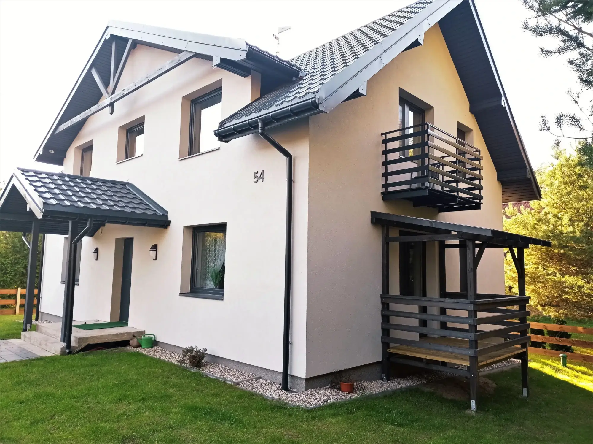
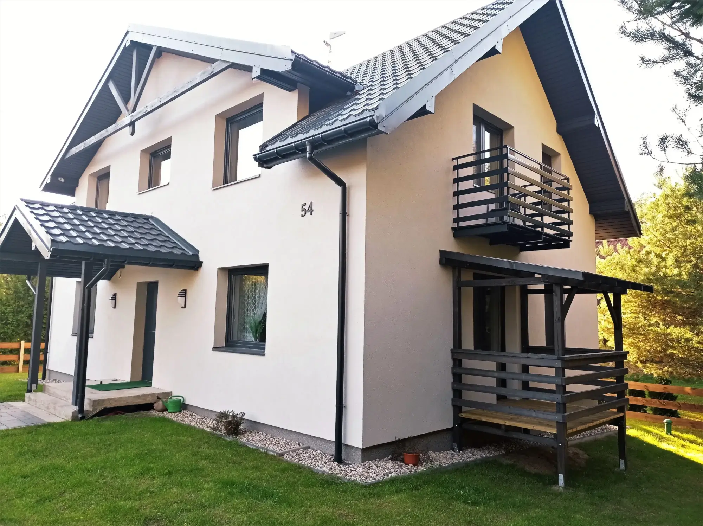

Kanał Augustowski
Najdłuższy zabytek w Polsce
Unikatowe w skali europejskiej dzieło budownictwa wodnego z pierwszej połowy XIX wieku. Powodem budowy Kanału Augustowskiego były pruskie restrykcje celne uniemożliwiające spławianie polskich towarów Wisłą do Gdańska. Kanał Augustowski miał połączyć dopływy Wisły, Narew i Biebrzę, z Niemnem, a od Niemna do Bałtyku zaplanowano połączenie poprzez Kanał Widawski, aby ominąć terytorium Prus.